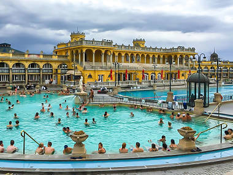

Széchenyi Baths
One of the largest thermal bath complexes in Central Europe, the Széchenyi Baths in City Park are far and away Budapest's most famous.

Buda Castle
A World Heritage Site, Buda Castle (or Royal Palace) on Szent György tér is one of the most emblematic architectural masterpieces of the city, and the building easiest to recognise from the Pest side of the Danube.

Hungarian National Museum
The construction of one of the most beautiful classicist palaces of Hungary began in 1837 based on the plans of Mihály Pollack.